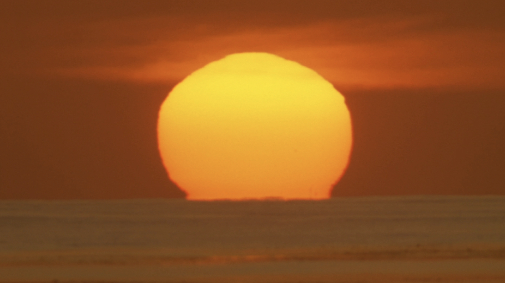
This Light is useless
Realistically, the sun is the closest thing we have to a god. It is our life-giver; the primary object of our obsessions, faiths and beliefs; it sets our rhythms; it illuminates our moon; it colors us in; it is our mirror—or at least it makes our reflection possible. But unlike other great stars witnessed throughout human history, it doesn’t have enough mass to explode as a supernova. In about 5 billion years it will start to turn into a red giant, growing so large that it will engulf Mercury, Venus, and probably Earth. In the words of Earth, Wind, and Fire, “That’s the Way of the World.” A suitable response to this seems to hang between a shrug and a call to arms.
Regardless of this probable outcome and any schemes we may have to outmaneuver it, human relations feel nothing short of nightmarish on a “day to day” basis. One could ask - what would you expect from a species programmed to survive at any and all costs amongst millions of other organisms all striving for the same goal? One could answer “Now I am become Death, the destroyer of worlds.” One could also answer “check me out on YouTube.” Either way we’re left to deal with a mutated representation of God as radiant technology itself.
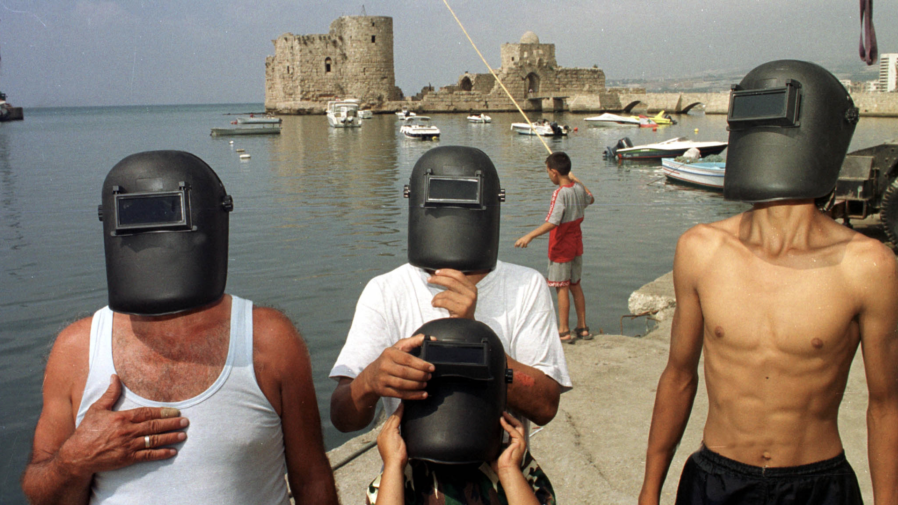
Measuring by the scale of eternity, it’s tempting to think that any activity is vain. While This Light is officially at a loss to provide reason for anything to exist, it finds that existence continues to warrant the feverish exploration of things that make no claims towards existing for a reason. Quite simply, This Light seeks out queer aesthetic forms through which life on earth can be experienced. It wants to be sensitive to its own dynamic rearrangement of the world, regardless of how small its scale, through the activation of certain works of art. All it can ever offer is a condition of possibility and impossibility of shining, but in making things shine, special attention will be given to that which is excluded from shining elsewhere.
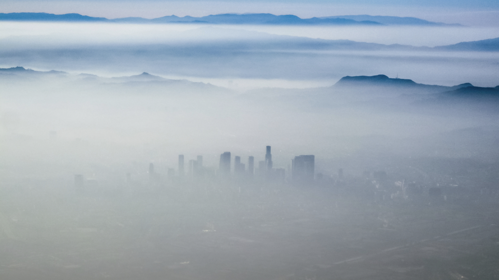
This Light likes to challenge and be challengedThis Light is a reaction to the lack of a screening venue (or even a regular screening series) in Los Angeles committed to moving image art. With an expansive definition of what that can be and no particular allegiances to anything, This Light shows things commonly referred to as video art, experimental film, commercial cinema, art film, documentary, television, music videos, viral videos, and pornography. These things will all be combined through the same stream of light so that those common labels become perplexing, and then perhaps even irrelevant. Additionally, things commonly referred to as performance art, readings, live music, and DJ sets will take place. The motivation for this comes out of experience working within a repertory cinema, an underground media art gallery, an art house cinema, a video store, a free alternative art school, an inner-city after school video program, a rural summer film program, an orphanage, a political lobby group, a labor union, the motion picture industry, the music industry, live event production, nightclubs, BFA programs, MFA programs, film festivals, contemporary art museums, corporate video departments, residencies, illegal file sharing networks, and churches.
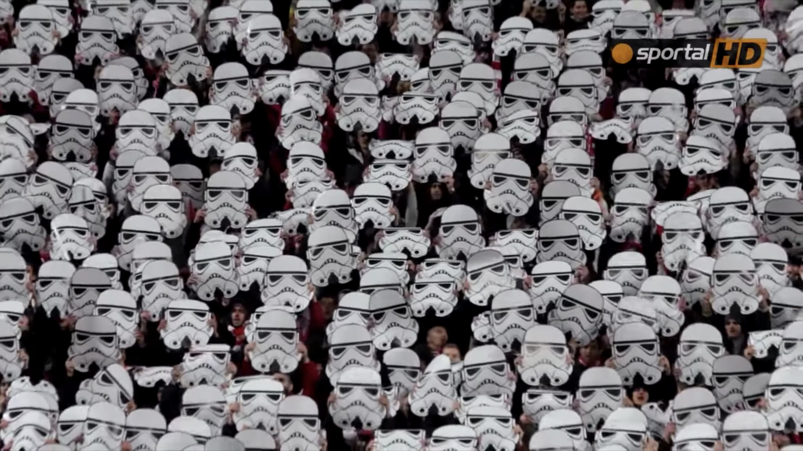
Different work will attract different people, and what happens before and after viewing a work can affect one’s experience of it drastically. Emphasis will be placed on the viewing experience as a whole, and this could mean that work is accessorized, augmented, butchered, dissected, diffracted, repeated, or reflected. Some will flock like nocturnal moths to This Light lamp of the particular. Others will quickly become bored as their attention drifts to matters that are at that moment imperceptible, out of reach, or deep within. The rest will get angry, but This Light will smile and shine on, so as to say “leave then.” Not in a hostile manner, just as an acknowledgement that there is no good reason for anyone to be there.
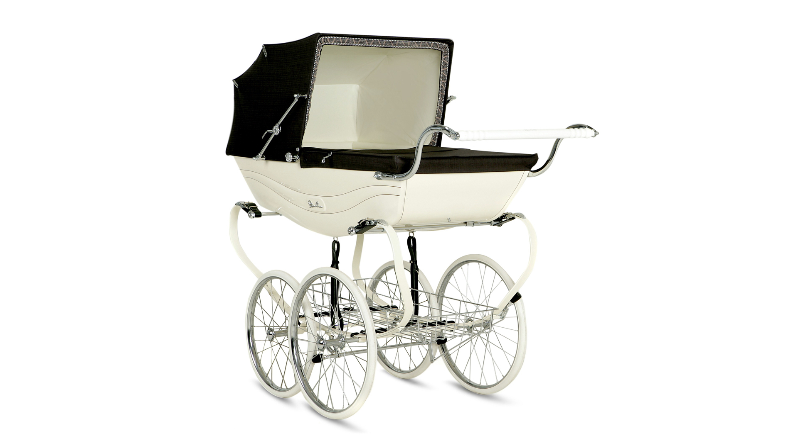
This Light is based in and around an object that will develop a history while reaching for a future
This Light will mostly take place in and around an object. The object is designed in response to the tendency for alternative screening venues to be uncomfortable sites of compromised viewing conditions under looming threats of eviction. It is designed to show works of art, and though some events may be works of art themselves - even when composed of other works of art (the work being shown) - the object itself is not an artwork. It is a design object constructed to provide optimal viewing conditions for works of art. However, the object plus the art works plus the entire situation these things create across time is to be understood as an artwork with continuity, and that artwork is called This Light.
The object is an informal, parasitic structure that exploits the environmental potentials of a private back yard in Southern California. By day it’s a functional camera obscura (closed roof) or breathable patio sunshade (open roof), by night a soundproofed cinema with an HD projector, hifi soundsystem, and comfortable seating. It is lightweight and portable enough to be moved to a new site if need be, drawing on the history of moveable and nomadic units as an emancipatory project.
A more permanent home for the project will be http://thislight.org, which will deliver information about the future of the project while archiving its past. Certain artworks and events will be extended onto the website, which will likely outlive those who were around to witness its launch in 2017.
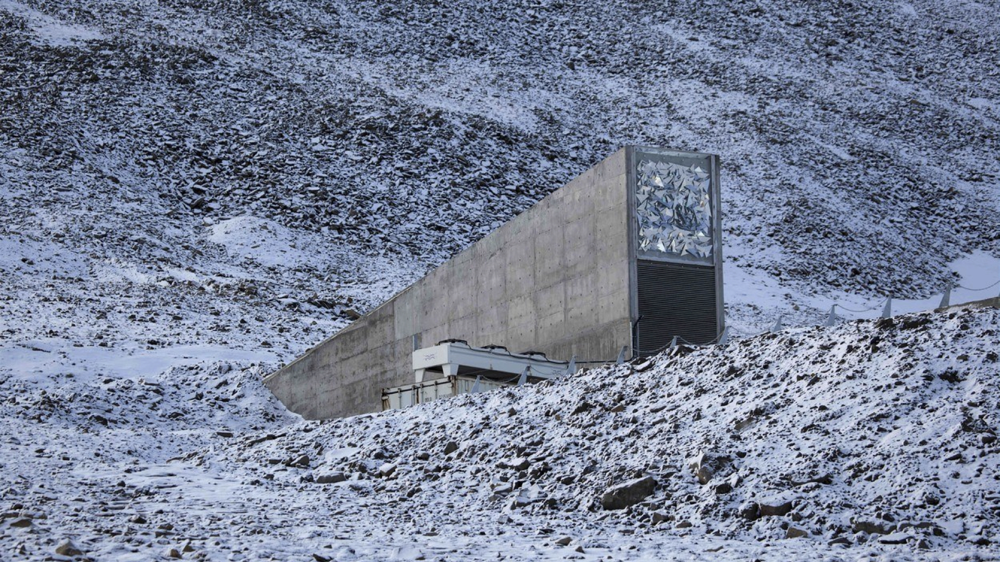
This Light is a collector of sorts, so whatever This Light shows, it will save, effectively creating a sanctuary for endangered works. The works will not be saved for any sort of economic circulation, just so that one more copy exists. There will be a work-saving ritual at the end of certains screenings in which everyone sings in unison.
This Light believes in the magic of going to the movies
This Light emerges out of a desire for collective viewing, and embraces the pressures and expectations that a social screening environment can afford. When films were hard to find, the strips of celluloid and the events they allowed for were treated with reverence - people knew they may never be able to experience them again. Events at This Light are composed to resurrect this reverential tone.
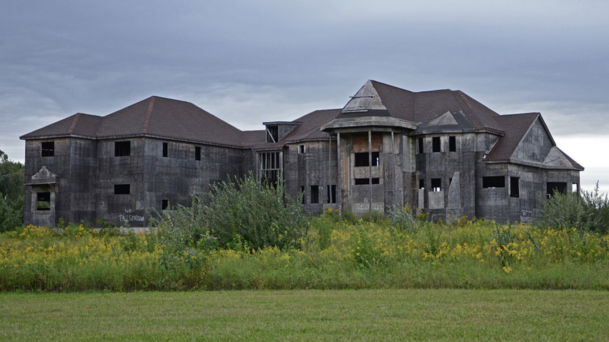
At a time when public space is rapidly dissolving into private property, This Light opens the domestic up to various publics. Here, the ability for networked technology to connect us to the world at large even when we are inside our homes is leveraged. This Light brings people together in an object that ameliorates the monetization and distraction of attention while scrolling feeds of streaming content in solitude. Like Stan Vanderbeek in his imagining of his Movie-Drome as a theater linked to orbiting satellites that would store and transmit images, This Light imagines a global network of like objects through which ideas, audiences, programming, and files are shared. You may have noticed that what you’re reading is an instruction manual for executing like projects elsewhere.
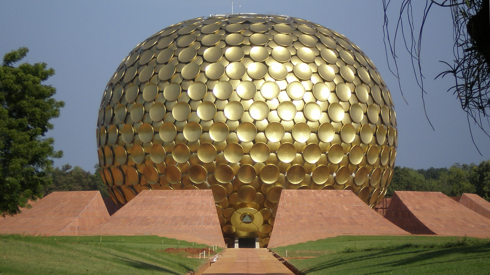
This Light puts the work first
This Light is more like a space of worship than a commercial operation in which you stand near some collectible assets and wait to talk to the right person. It’s all about the work in relation to the audience, not the status of the work or the humans in the audience.
This Light offers no favors. When This Light shows something, it’s not because it feels it should, or has to for some reason external to the work itself; work is shown based on that same impulse when you share a link with a friend - “you have to see this.”
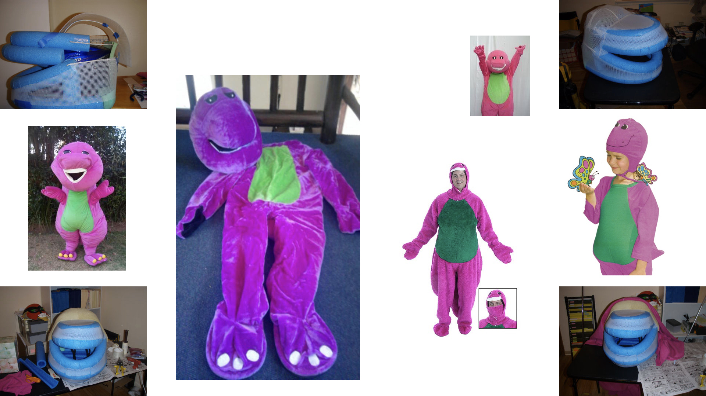
This Light strives to behave like a wave in a world of excessive congeries of particles
This Light is not a formal organization, commercial operation, nonprofit, or brand. Such formations would only slow it down and suppress its livelihood, so This Light stays as lean and flexible as possible. This entails:
-astonishingly low operating costs
-a staff of one
-no board
-$0 price of admission
-below zero respect for the false scarcity of the art market and film festival circuit
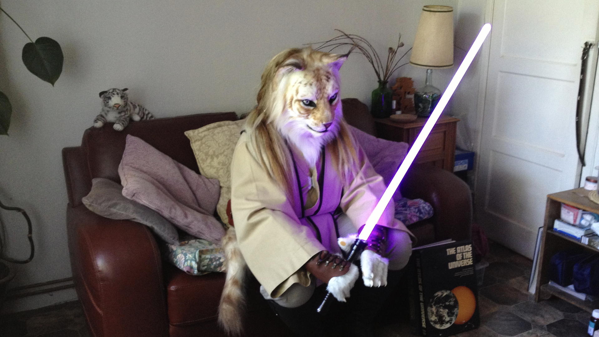
The program relies on the generous permission of artists, what’s freely available online, and the “home use only” clause of commercial media (which includes “art house” and “independent” cinema). This Light embraces the circulation of works online, and places them in the highest quality screening conditions possible for anyone who cares enough to show up. If it makes sense for the work, it might just loop for days.
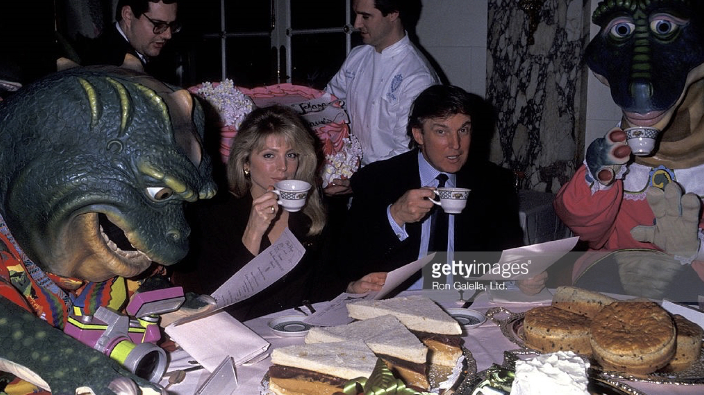
This Light accepts that it is an institution while lucid dreaming about what that can mean
This Light recognizes that institutions are systems of established and embedded social rules that structure social interactions. If This Light were to speak of the "institution" as other than itself, it would disavow its role in the creation and perpetuation of its conditions. It's not a question of inside or outside - This Light literally and figuratively erases that distinction. Nor is it a question of being against the institution: This Light is the institution. Therefore, it's a question of what kind of institution, what kind of values it institutionalizes, what forms of practice it rewards, and what kinds of rewards it aspires to. Because the institution of art is internalized, embodied, and performed by individuals, these are the questions that institutional critique demands we ask, above all, of ourselves.
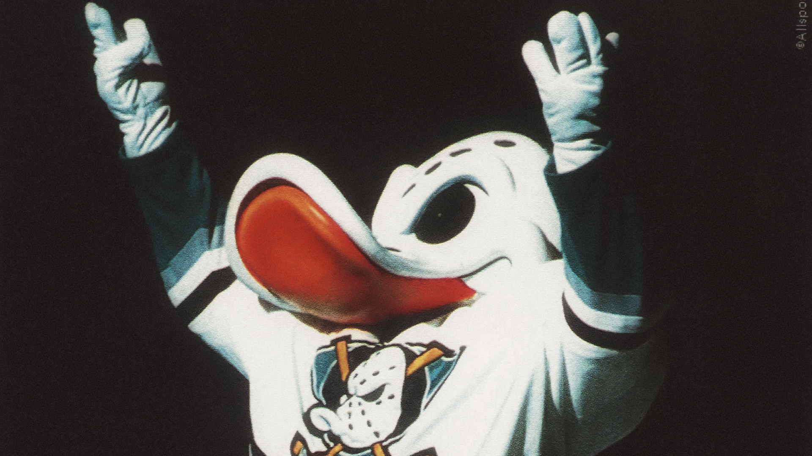
This Light doesn’t need rhetorical works that perform institutional critique to professionals within the cottage industry of critical art. Married to these logics, art lives in incest, swallowing, engulfing its own tail, still part of its own body, fornicating within itself, and passion becomes a nightmare tarred with protestantism … a monument, a heap of ponderous grey entrails.Implicitly, This Light executes institutional critique through that which it refuses. Explicitly, This Light is an affirmational artwork that illuminates itself - the object, the audience, the idea - with works of art that must be seen.